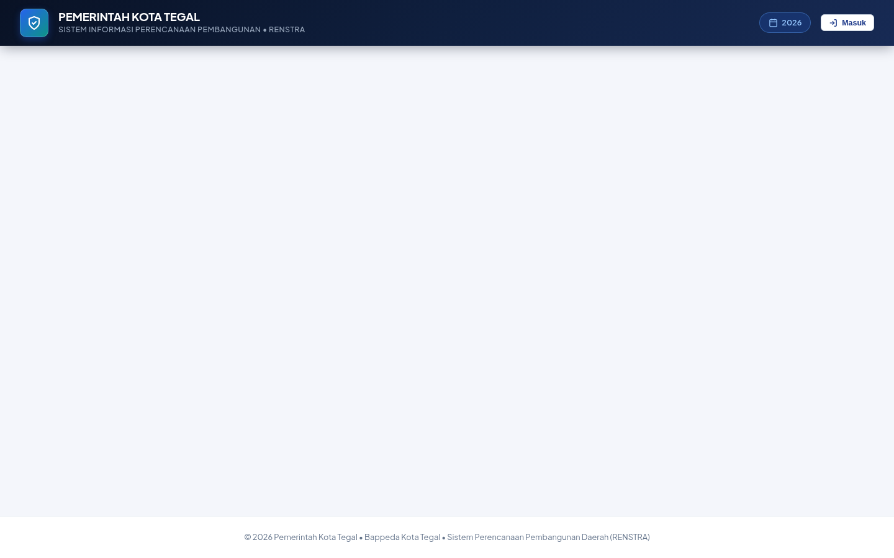
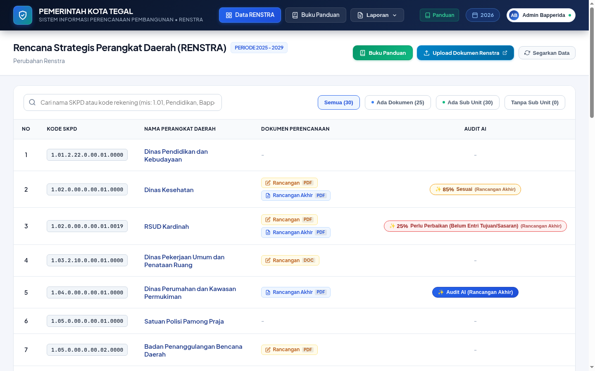
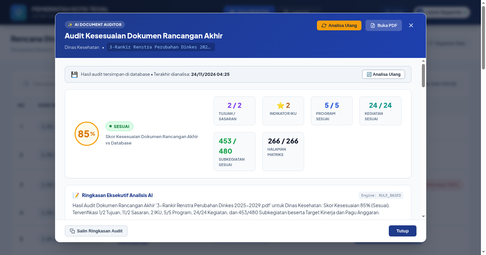
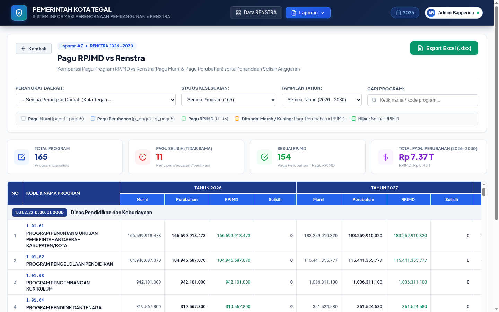

Pendahuluan & Konsep Sistem
Kerangka kerja perencanaan perubahan Renstra Kota Tegal Periode 2025–2029
Aplikasi RENSTRA (Rencana Strategis Perangkat Daerah) Perubahan Pemerintah Kota Tegal merupakan platform digital terpadu yang memfasilitasi penyusunan, pengendalian, evaluasi, dan penyelarasan dokumen perencanaan lima tahunan Perangkat Daerah terhadap RPJMD Kota Tegal Tahun 2025–2029.
Landasan Hukum & Kebijakan
- Undang-Undang Nomor 23 Tahun 2014 tentang Pemerintahan Daerah.
- Peraturan Menteri Dalam Negeri Nomor 86 Tahun 2017 tentang Tata Cara Perencanaan, Pengendalian dan Evaluasi Pembangunan Daerah, Tata Cara Evaluasi Rancangan Perda tentang RPJPD dan RPJMD, serta Tata Cara Perubahan RPJPD, RPJMD, dan Renstra Perangkat Daerah.
- Peraturan Menteri Dalam Negeri Nomor 90 Tahun 2019 tentang Klasifikasi, Kodefikasi, dan Nomenklatur Perencanaan Pembangunan dan Keuangan Daerah.
- Keputusan Menteri Dalam Negeri Nomor 050-5889 Tahun 2021 dan pemutakhirannya terkait pemutakhiran nomenklatur urusan, program, kegiatan, dan subkegiatan.
Akses & Login Akun Pengguna
Prosedur autentikasi aman menggunakan Single Sign-On (SSO) Google
Aplikasi menggunakan sistem keamanan Firebase Authentication dengan integrasi Google OAuth 2.0. Setiap pejabat perencana, operator Perangkat Daerah, dan tim Bapperida dapat masuk menggunakan akun Google resmi instansi atau akun email terverifikasi.
Buka Peramban & Kunjungi Aplikasi
Akses alamat sistem perencanaan RENSTRA melalui peramban resmi (disarankan Google Chrome, Microsoft Edge, atau Mozilla Firefox terbaru).
Klik Tombol "Masuk dengan Akun Google"
Pada layar login, klik tombol utama berwarna putih-biru bertuliskan Masuk dengan Akun Google.
Pilih Akun & Izinkan Akses
Pilih akun email kedinasan Anda pada jendela pop-up otentikasi Google. Sistem secara otomatis membaca peran dan membuka halaman dashboard.

Navigasi Halaman Utama (Daftar Perangkat Daerah)
Pusat kendali monitoring data dan status dokumen perencanaan
Halaman utama menyajikan direktori lengkap seluruh Organisasi Perangkat Daerah (OPD) di lingkungan Pemerintah Kota Tegal beserta metadata perencanaan tahun bersangkutan:

Elemen-Elemen Kunci pada Halaman Utama
| Komponen | Deskripsi & Lokasi | Fungsi Operasional |
|---|---|---|
| Tombol "Upload Dokumen Renstra" | Header atas kanan banner hero | Tautan langsung menuju portal monevrkpd.tegalkota.go.id/dokren untuk mengunggah dokumen PDF resmi (Rancangan Awal, Rancangan Akhir, atau Penetapan). |
| Kotak Pencarian Cepat | Atas tabel OPD | Menyaring nama perangkat daerah secara instan berdasarkan nama atau kode SKPD tanpa me-refresh halaman. |
| Kolom Dokumen Renstra | Kolom tabel status dokumen | Menampilkan nama file dokumen PDF terbaru yang telah diunggah oleh Perangkat Daerah beserta tanggal pengesahannya. |
| Badge Skor Audit AI | Kolom khusus Audit AI | Menampilkan persentase kecocokan 10 elemen perencanaan antara berkas PDF dengan database aplikasi (Warna Hijau, Kuning, Merah). |
| Tombol "Detail Renstra" | Kolom aksi paling kanan | Membuka halaman struktur pohon cascading (Tujuan, Sasaran, Program, Kegiatan, Sub Kegiatan) dari Perangkat Daerah bersangkutan. |
Audit Kesesuaian Dokumen Renstra (AI Audit Engine)
Pemeriksaan ketat kepatuhan kalimat sama persis antara Dokumen PDF dengan Database
Fitur Audit Dokumen AI dirancang khusus oleh Bapperida Kota Tegal untuk memverifikasi keselarasan redaksional dan numerik antara dokumen perencanaan yang telah diunggah (Penetapan Renstra atau Rancangan Akhir) dengan data riil yang dientri ke dalam database aplikasi.
10 Elemen yang Wajib Sama Persis
- Kalimat Tujuan (
uraitujuan) - Kalimat Indikator Tujuan (
uraitujuan_indikator) - Kalimat Sasaran (
uraisasaran) - Kalimat Indikator Sasaran (
uraisasaran_indikator) - Kalimat Program (
uraiprogram) - Kalimat Indikator Program (
uraiindikator) - Kalimat Kegiatan (
uraikegiatan) - Kalimat Indikator Kegiatan (
uraiindikator) - Kalimat Subkegiatan (
uraisubkegiatan) - Kalimat Indikator Subkegiatan (
uraisubkegiatan_indikator)

Tingkat Kategori Skor & Pinalti Data
| Rentang Skor | Status Hasil Audit | Arti & Konsekuensi |
|---|---|---|
| 90% - 100% | Sangat Sesuai | Semua rumusan kalimat 10 elemen dan pagu anggaran telah identik dan selaras penuh. |
| 75% - 89% | Sesuai | Mayoritas elemen selaras; terdapat beberapa perbedaan redaksi kecil atau target minor. |
| < 75% | Terdapat Selisih | Terdapat selisih nominal pagu anggaran atau perbedaan redaksi kalimat yang memerlukan koreksi. |
| Maks. 50% | Perlu Perbaikan (Belum Entri Tujuan/Sasaran) | Pinalti Otomatis: Jika Perangkat Daerah belum mengentri rumusan Tujuan dan/atau Sasaran di database, sistem mengunci nilai maksimal 50% dan menolak pemberian skor tinggi sampai entri cascading diselesaikan. |
Tombol "Analisa Ulang"
Setelah Perangkat Daerah memperbaiki susunan kalimat atau angka di database maupun mengunggah revisi PDF di portal Dokren, klik tombol hijau "Analisa Ulang" pada bagian bawah modal audit untuk memicu audit ulang secara instan.
Pohon Kinerja (Cascading) Renstra
Visualisasi dan navigasi struktur berjenjang dari Tujuan hingga Sub Kegiatan
Halaman Rincian RENSTRA OPD menampilkan cascading berjenjang yang mencerminkan logika perencanaan kinerja pembangunan daerah:

Hierarki 5 Level Perencanaan:
Level 1: Tujuan Renstra
Pernyataan kondisi akhir yang ingin dicapai OPD selama 5 tahun, dilengkapi dengan Indikator Tujuan dan target tahunan.
Level 2: Sasaran Renstra & IKU
Rumusan hasil (*outcome*) strategis turunan dari Tujuan. Indikator sasaran yang berstatus kunci ditandai sebagai Indikator Kinerja Utama (IKU).
Level 3: Program Prioritas
Kumpulan instrumen kebijakan dan urusan yang mengelompokkan kegiatan pembangunan, dilengkapi Indikator Program dan akumulasi pagu indikatif.
Level 4: Kegiatan
Bagian dari program yang dilaksanakan oleh bidang/unit kerja operasional untuk menghasilkan keluaran (*output*).
Level 5: Sub Kegiatan & Pagu Anggaran
Unit aktivitas terkecil yang mengikat alokasi pagu belanja dan target volume keluaran riil per tahun anggaran.
Entri & Pengubahan Target Kinerja serta Pagu Anggaran
Pengelolaan nilai Target Murni, Target Perubahan, Pagu 2025–2029, dan Realisasi
Setiap entri data pada tabel dilengkapi modal pengentrian komprehensif untuk merekam target kinerja dan alokasi pagu anggaran baik pada periode perencanaan murni maupun perubahan.

Aturan Pengisian Formulir:
| Kolom Formulir | Pedoman Pengisian | Contoh Masukan |
|---|---|---|
| Uraian Kalimat | Harus disalin identik dari naskah Renstra PDF yang disahkan oleh Walikota Tegal. | Meningkatnya kualitas pelayanan perizinan terpadu |
| Satuan Ukuran | Gunakan satuan baku (Persen, Indeks, Dokumen, Orang, Unit, dsb). | Persen (%), Nilai, Paket |
| Target Murni vs Perubahan | Kolom Murni merekam target penetapan awal; kolom Perubahan merekam target hasil evaluasi atau rekalibrasi. | Murni: 85%, Perubahan: 88% |
| Pagu Anggaran (Rp) | Masukkan angka nominal bulat tanpa tanda titik atau koma (sistem otomatis memformat mata uang). | 150000000 → Rp 150.000.000 |
| Realisasi Kinerja | Tercatat pada evaluasi tahun berjalan untuk membandingkan capaian fisik terhadap target. | 87.5% |
Modul Laporan & Ekspor Microsoft Excel
Penerbitan dokumen matriks resmi Permendagri 86/2017 sekali klik
Aplikasi menyediakan 6 menu laporan resmi yang dapat dicetak langsung atau diunduh ke format spreadsheet (.xlsx) sesuai dengan format baku lampiran Permendagri Nomor 86 Tahun 2017:
1. Laporan Tabel 3.1: Tujuan dan Sasaran Jangka Menengah
Menampilkan matriks keselarasan visi, misi, tujuan, sasaran, indikator sasaran, baseline, dan target tahunan 2025–2029.

2. Laporan Tabel 4.1: Rencana Program, Kegiatan & Kerangka Pendanaan
Menyajikan matriks rincian seluruh Program, Kegiatan, dan Sub Kegiatan beserta pagu anggaran indikatif dan target kinerja tahunan se-Kota Tegal.

3. Laporan Daftar IKU & Komparasi Pagu RPJMD vs Renstra
Digunakan oleh pimpinan daerah dan Bapperida untuk memastikan tidak ada indikator strategis yang terlewat atau pelampauan pagu batas RPJMD.


Tanya Jawab (FAQ) & Bantuan Teknis
Solusi cepat atas kendala yang kerap dihadapi pengguna
Pertanyaan yang Sering Diajukan
Mengapa Skor Audit AI OPD saya hanya 25% atau 50%?
Periksa tab Tujuan & Sasaran pada modal audit. Jika Perangkat Daerah belum mengentri Tujuan atau Sasaran di database, sistem memberikan pinalti otomatis maksimal 50% dan status "Perlu Perbaikan (Belum Entri Tujuan/Sasaran)". Segera entri Tujuan dan Sasaran agar skor meningkat.
Mengapa kalimat yang mirip tetap ditandai "Tidak Cocok"?
Sistem menerapkan aturan harus sama persis. Perbedaan kata seperti "Meningkatnya tertib penyelenggaraan..." vs "Meningkatkan tercapainya tertib administrasi..." akan dideteksi sebagai ketidaksesuaian. Samakan redaksi database dengan dokumen PDF.
Bagaimana cara mengunggah dokumen Renstra Penetapan terbaru?
Klik tombol "Upload Dokumen Renstra" pada header halaman utama. Anda akan diarahkan ke portal monevrkpd.tegalkota.go.id/dokren. Unggah berkas PDF penetapan di sana, lalu kembali ke aplikasi dan klik "Analisa Ulang".
Apakah hasil ekspor Excel sudah sesuai format BPK / Kemendagri?
Ya, tata letak kolom, judul bab, dan penomoran tabel telah disesuaikan persis dengan formulir Permendagri Nomor 86 Tahun 2017 sehingga siap dilampirkan dalam rancangan akhir atau evaluasi triwulanan/tahunan.
Badan Perencanaan Pembangunan, Penelitian dan Pengembangan Daerah (Bapperida) Kota Tegal
Gedung Balai Kota Tegal • Telepon: (0283) 351001 • Email:
bapperida@tegalkota.go.id